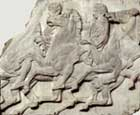
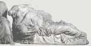

Acropolis
Acropolis means 'high city' in Greek. Most city-states in ancient Greece had at their centre a rocky mound or hill where they built their important temples and where the people could retreat to if under attack. The most famous acropolis is the one in Athens.
| The Athenian Acropolis is home to one of the most famous buildings in
the world: the Parthenon. This temple was built for the goddess Athena.
It was decorated with beautiful sculptures which represent the greatest
achievement of Greek artists. |
|
 |
|  |
|
The Acropolis was also home to a number of other temples and sanctuaries
and was the focus for the Athenian festival for Athena, the Panathenaia. |
The buildings of the Acropolis provide examples of both the Ionic
and Doric styles of architecture.

|
|
|
Follow the procession of the Panathenaic festival, as it unfolds along the Parthenon frieze
|
Find out the about the buildings and other features on the Athenian Acropolis
|
Build your own Greek temple!
|

|
|